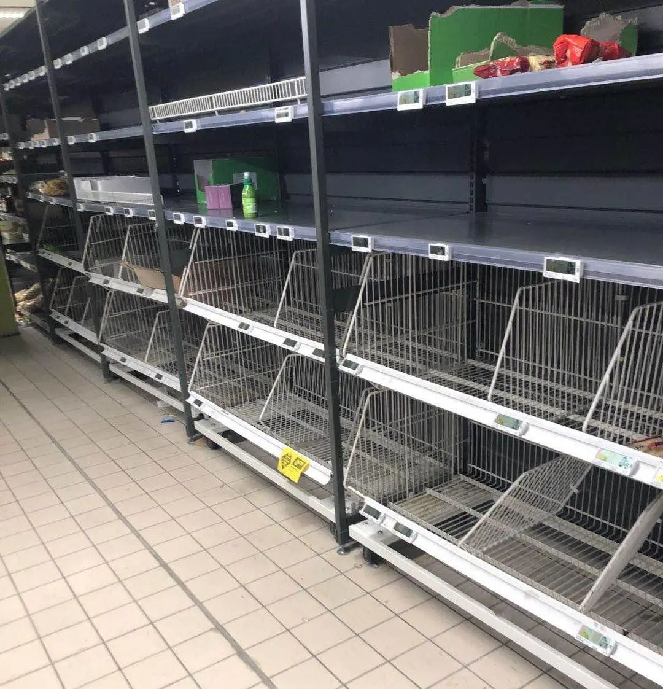
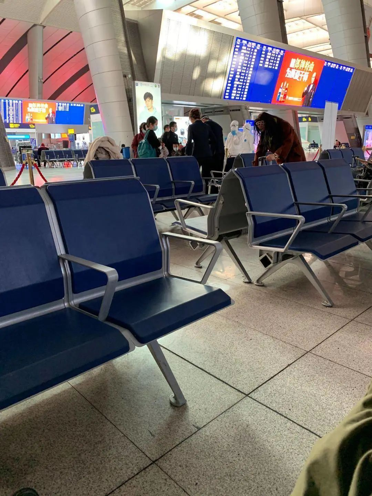
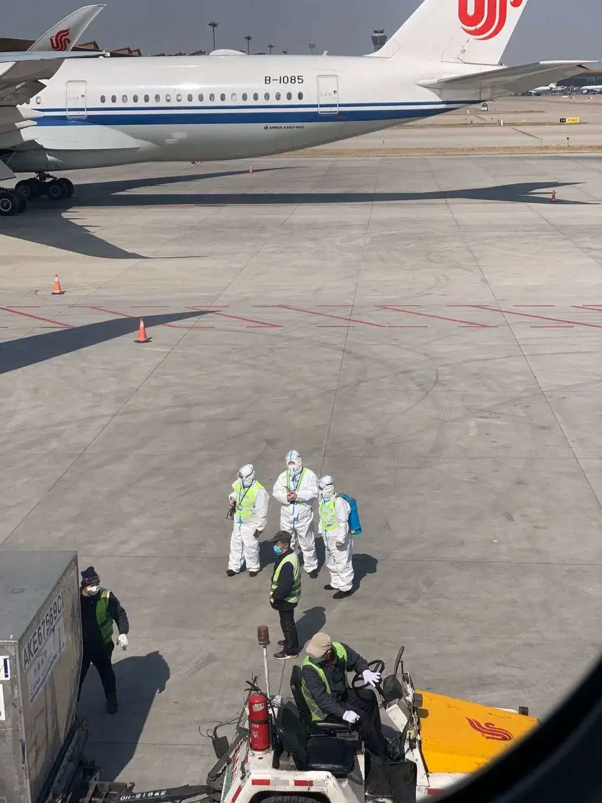
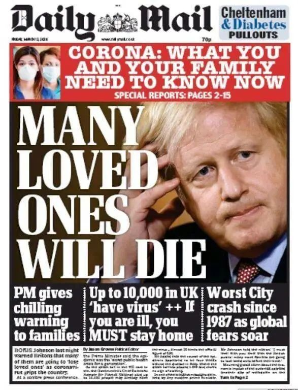
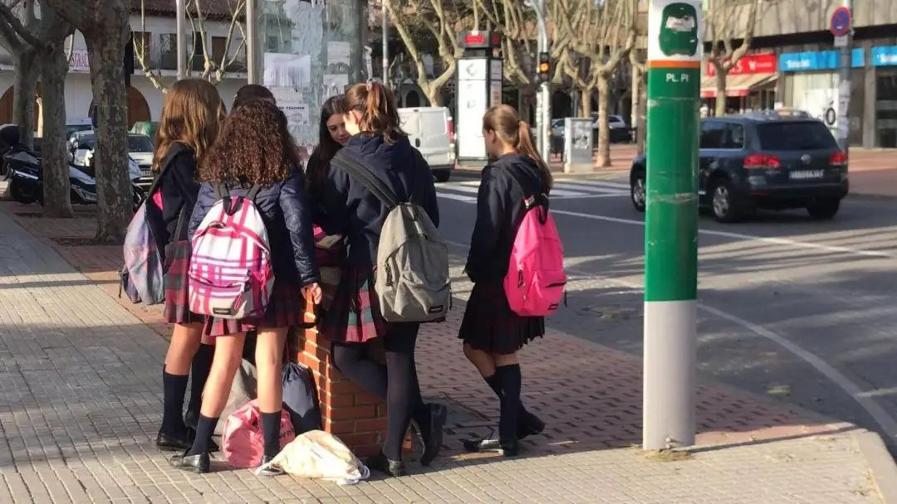
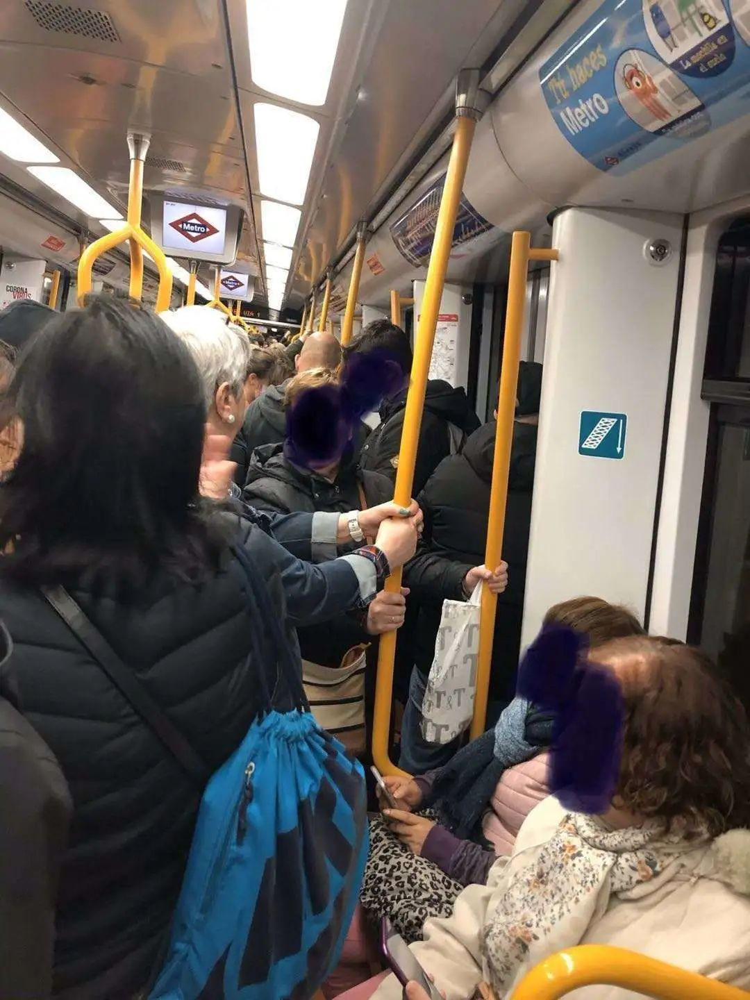
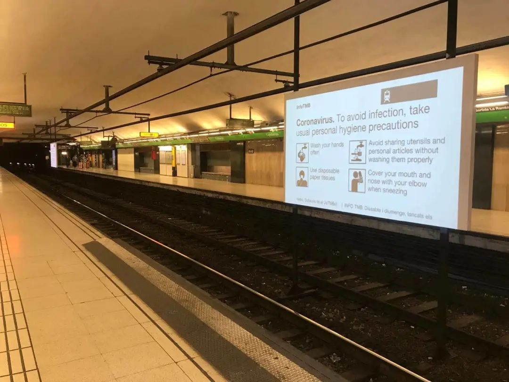
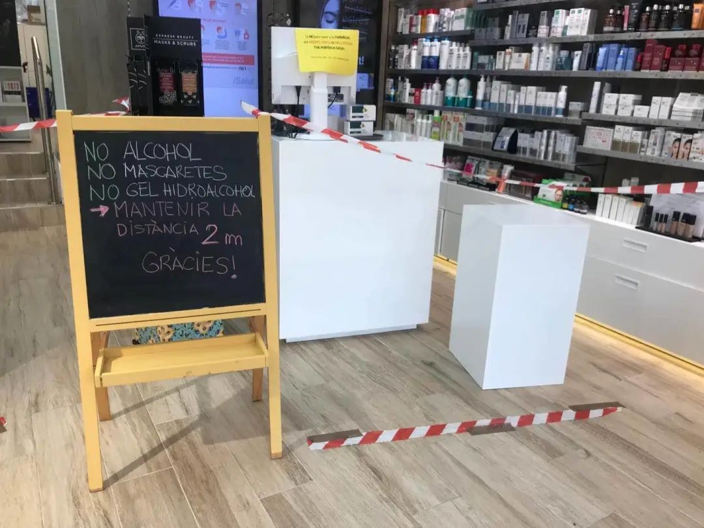

英国留学生口述：戴口罩出门遭歧视，买两万机票回国愿自费隔离
原文链接 备份链接 去年9月刚入学伦敦大学学院(ucl)的大一学生黄嘉琪（化名）没有想到，自己成年后遇到最大的困难是新冠肺炎。 今年1月初，黄嘉琪从伦敦飞回国，准备度过入学以来的第一个圣诞假期，为了1月下旬准时入学，她提前买好了回伦敦的机 …

《小酒馆》，是燃财经旗下的故事栏目，真人真事，讲述创新经济时代的人生百态。本文为第35期。
作者 | 金玙璠 孟亚娜 陈琪
编辑 | 魏佳
“新冠疫情，中国打上半场，世界打下半场，华人留学生打全场”。这虽然是一句调侃，但最近几天，境外输入确诊病例数量的确在逐渐增加。
疫情严重国家的留学生，要不要回国避险？有声音批评他们“千里投毒”，也有人认为，疫情之下，不能够拒绝他们回国。而身处漩涡中心的留学生们，一直在去和留的抉择之间徘徊。
留下？
学校宣布停课，甚至部分关闭了学生宿舍，学业被迫暂停。
当地居民的防护近乎“裸奔”，加之备受争议的“群体免疫”概念抛出后更是让华人群体恐慌升级。
既担心被感染，也担心因为戴口罩被“特殊对待”，他们独自身在海外，面临巨大的心理压力。最重要的是，留学生不是当地公民，可能无法享受公平的医疗保障。
回国？
机票一票难求，价格飞涨，24小时提价16次，随时处在被取消的边缘。
返校时间无法确定，毕业、实习和找工作都可能被耽误，个人和家庭都需要承受一定的经济成本和时间成本。
所在地确诊人数激增，多地的出入境、中转政策也日日更新。在路上被感染风险增大，同时也要承受国内给留学生的舆论压力。
一些人全副武装，已经做好不吃不喝的准备，即将踏上回国的旅程，一些人已经辗转回国，幸运落地，经过层层检查，开始按流程隔离。
燃财经采访了8位身处不同国家的留学生，他们讲述了自己做“逃跑派”的原因，以及回国路途上的见闻。他们理解舆论对部分留学生的负面评价，但他们认为，绝大部分人对祖国的支持大于对祖国的消耗，希望能得到同胞的理解。
— 曲折回国路 —
***退票、改签生死时速***
***5个国内朋友帮我抢到回国机票***
April 24岁 法国鲁贝
第一程机票被取消的那一刻，我就知道，回国没这么简单。
看了一眼时间，9点50分，国内是下午4点50分，客服马上下班。
开电脑、查电话，我立刻拨通了客服，但国外的手机号怎么也打不通，我只好求助朋友。在4个国内朋友的帮助下，40分钟后，客服终于接通。对方告知，如果要改签，最早一班飞机在10天后，从巴黎出发经停台北再到成都，全程23小时。
早些日期中转多次的机票倒是也有，但中途要是困在俄罗斯、泰国等中转国，没有签证，我完全不知道怎么办，不敢买那种票。
客服每说一句话，都会叹一声气，她接了太多这样的电话，现在各国和地区的出入境政策、中转政策一天就会更新一次，她也不敢保证航班一定能执行。正当我犹豫的时候，她说，再不订这张机票也没有了。事实也是如此，我改签完挂掉电话后，才正式收到航班取消的信息，和我同一班飞机的人再去联系改签，客服已经下班了，他们只能退票自行重买。
最开始我是打算留在欧洲找实习的。但我听说一个学姐本来已经拿到了offer，因为疫情又砍掉了，我考虑到疫情要持续两三个月，这段时间很难有实习机会。
法国对疫情的重视也不够，医疗资源有限。我戴口罩走在街上会被歧视，不戴口罩的话，有些人看到你是亚洲面孔很可能会歧视你。昨天去超市，除了中国人我就看到两个外国人戴了口罩。

抢购一空的超市 受访者供图
马克龙宣布法国处于“战争状态”，全面动员抗击疫情之后，法国人才重视起来，但目前来看，如果你只有轻度症状，他们是不会给你检测的，因为检测速度根本跟不上。
 法国人开始间隔1米排队购物 受访者供图
法国人开始间隔1米排队购物 受访者供图
我身边的同学有一半的人决定留下来，另一半计划回国。他们都很担心国内给留学生的舆论压力。
其实，我身边回国的人都非常自觉，在回来的路上也是非常小心，全副武装，自己也不想被感染，也不想把风险带给其他人。我室友买了2万块直飞广州的机票，已经顺利回国了，她一路上都非常感恩，不停地对各种工作人员说谢谢。
起起伏伏折腾了好几回，我心态也平和了。一边期待航班能顺利起飞，一边囤好生活物资，如果我不能走的话，就居家隔离。
***曾两次写信给老师说想回国***
***学校“不建议回家”***
沐艺 23岁 比利时某小镇
我在2019年9月来到比利时读研，今年春节本想回国，买了往返机票，但因为国内疫情爆发，机票被取消了。
3月初是比利时的滑雪周，有一批旅客去到意大利旅游，回来之后很多人被确诊，大多都是轻症，但因为这些人身体素质比较好，所以一开始都没有重视，直到后来形成了社区传染。
在我回国的前两天，有4000多人做了检测，结果300人被确诊。试剂用完了，就规定轻症不要去医院。
我感觉比利时人真的不怕疫情。学校经常会有一些交换课程要去到布鲁塞尔，布鲁塞尔火车站本来就比较乱，我们四个中国人从火车站下来的时候，因为戴了口罩被当地人破口大骂。我们给老师写信表明不想去学校上课，但老师回复说这只是一次流感，不用害怕，学校也不会停课。
随着疫情越来越严重，我们又给学校写信，表示中国学生觉得不安全，想回家，当时学校不建议我们回家。但后来，眼看着学校一步步被打脸，前几天发邮件告诉我们可以回国了。
在比利时的时候，家里人非常担心我，每天叮嘱我出门上课要戴好口罩，但我不敢戴。因为去学校要坐40分钟公交车，而每天早上公交车上基本都坐满了当地高中生，如果戴口罩肯定会被骂，还有可能被攻击。
我当时很想回国，但也比较纠结，害怕被说不负责任。身边也有朋友说，哪怕是回国确诊了，也比在国外查出轻症强，国内的朋友们也都建议我赶紧回国。
我在3月13日买了机票，直飞北京的机票涨到了2万左右，我选择了买中转机票。全程17个小时，3月14日从布鲁塞尔飞阿联酋阿布扎比，再飞北京，机票价格是8600元，比平时贵两倍多。
 飞机上发放的出/入境健康申明卡
飞机上发放的出/入境健康申明卡
受访者供图
从布鲁塞尔机场起飞的时候，没有任何体温检测，机场只有中国人戴了口罩。在阿布扎比转机的时候，人也特别多，而且整个航班90%以上都是来自欧洲国家的中国人。在飞机上，大家基本都不吃饭，也有些人穿着全套防护服，我只戴了口罩和普通眼镜，因为当时什么都买不到了。

抵达首都机场后排队交表 受访者供图
我在3月15日落地北京首都机场，国内机场的防护做得特别严。当时国外的航班特别多，需要分批下机，先是西班牙、意大利等疫情严重的国家航班，接着才是我们。我是早上8点50分落地的，11点才下飞机。抵达之后，在机场一路填表，测体温，全程有专属通道。
取完行李后，有专车把我们带到新国展登记。之后，有专门的车辆把我送到了高铁站，在高铁站也设立境外旅客专区。

北京南站境外旅客专区 受访者供图
回到江苏后，我先做了检测，现在一个人在酒店隔离，今天是我隔离的第二天。
*****机票涨了三倍*****
*****路上用滑雪镜代替护目镜*****
小明 30岁 奥地利维也纳
我是2009年4月出国的，当时在奥地利维也纳音乐学院读歌剧。毕业以后，我留在了维也纳，从事关于中欧旅游文化交流的工作，今年是我在奥地利的第11个年头。
奥地利有一项“反蒙面法”，导致一些想戴口罩的人也不敢戴，如果发现戴口罩，会被罚款150欧元左右。非常时期，华人群体如果戴口罩乘坐公共交通工具，还会被一些反华的当地人攻击。
我认为这次欧洲疫情很可能持续到9月、10月，而每年的7月、8月是旅游旺季，如果到时候疫情还没得到控制，我今年基本上就失业了。
回想年初国内疫情爆发的时候，我们在奥地利的华人华侨还向武汉进行了物资捐赠，但万万没想到，3月初欧洲会爆发疫情。
欧洲疫情初期，虽然家里人不断给我发信息劝我回国，但我没想过，因为有项考试刚好在4月。最近当地政府叫停了所有学校的课程，也通知考试可适当延期。
3月12日，朋友告知我奥地利将会在3月17日封城，让我早做打算。我开始观望机票，当日我观察到3月15日从维也纳经停台北飞往北京的航班，价格在7000元左右，但第二天机票涨到了11000元，比平时翻了三倍，而且3月16日这趟航班就停飞，所以我赶紧买了。现在如果想回国，只能中转韩国和日本，机票最低价在15000元左右，飞行全程长达30-40个小时。
决定回国之后，我开始着手准备防护工具。但是医疗防护工具短缺，我只能用滑雪镜代替护目镜。接着找朋友买了100个一次性口罩，戴了两层口罩，尽量把自己包裹得非常严实。

维也纳机场咖啡店工作人员未戴口罩和手套
受访者供图
回国那天在维也纳机场，老外工作人员没人戴口罩，但都戴了手套。老外比较注重勤洗手，他们认为病毒是通过手部感染的。咖啡店和商店都开着，但工作人员没做任何防护措施。整个机场只有华人旅客戴口罩，跟我乘坐同一班航班的旅客，大多都戴着口罩，也有几个人穿着防护服。在飞机上，大家基本上都在睡觉。
3月15日早上5点45分，我抵达台北机场。从台北的机场起飞前，工作人员让我们填写了表格，并告知我们飞往北京需要被统一隔离14天，并征得了大家同意。
早上11点，飞机抵达了北京首都机场。

抵达机场后地面的防疫人员 受访者供图
降落之后，我在飞机上等待了三个小时，由防疫人员挨个点名，出去做检测。下飞机后，有一条专门为境外归国人员设置的特殊通道，首先是填表、然后测体温、接着到了入境大厅，接着取行李。

北京首都机场工作人员
提前把航班的行李集中在了一起 受访者供图
拿到行李时已经是下午4点半，因为我已经提前买好了机票，最终目的地是郑州，所以没有去新国展，直接在机场办理了转机。
— 为什么要当“逃跑派” —

***在鲍里斯发表讲话的第二天早上***
***我买了回国的机票***
Daisy 24岁 英国伯明翰
3月7日左右，意大利的态势变得严重，我开始担心英国疫情的情况，接下来的两周，我全程自己待在房间里隔离，有一些自闭。如果继续待下去，意味着2-3个月无法出门，心理压力真的很大。
面对疫情，英国政府基本没有作为，当地民众也无动于衷，他们的状态让我感到非常恐惧。
我是2019年8月底来的英国，英国研究生是三个学期制，第三个学期只剩下写毕业论文了，学校已经承诺可以帮助我们解决签证问题，如果回国的话对学业几乎没有影响。当时纠结要不要回国，但考虑到路上被感染的可能性很大，同时我的课程3月13日才结束，再考虑到回国工作申请落户，规定需要在境外待满360天，我原计划留下写毕业论文。
直到3月12日，英国首相鲍里斯在新闻发布会上表示，英国疫情的“遏制阶段”已经失败，正式转入被动的“拖延”阶段，我听完内心实在承受不了，还是保命要紧。第二天一早，我就买了回国的机票。

2020.03.13 Daily Mail (每日邮报) 封面
那个时候，直飞北上广的机票已经买不到了，而且非常贵。于是我买了一张3月17日从伯明翰飞往迪拜再到香港的机票。本来打算从香港入境，再到深圳过海关。但现在香港政策多变，深圳也不太好入境了。我家在北方，回北京隔离会方便点，于是我又买了从香港飞北京的机票，一共6000多元。
在我买完机票之后，香港的政策变了，从3月19日开始，所有从英美飞往香港的航班，如果旅客没有香港的长期居住证都无法入境香港。在留学生群里，我看到有朋友3月18日从迪拜飞香港的机票被取消了。那天早上起床后，我一直在刷消息，解读政策，感觉很懵。但好在我是3月18日晚上抵达香港，有几个小时的时间差，希望能够顺利入境。
回国之后，我应该会先去医院做检查，然后再去隔离点隔离14天。我做好了面对高额医疗费用的准备，毕竟就算在国外确诊的话，费用也会只高不低，而且还可能得不到很好的治疗。
这个时候从国外飞回国，确实增加了人口流动性和感染机率，我其实感觉自己有些不负责任，但我确实非常恐惧，很感谢祖国能够接受我。还在犹豫是否要回国的朋友们，我觉得大家要做好两手准备，一定要做好个人防护，同时也要给自己留一条后路。

*****我戴着口罩站在路边*****
*****被白人摇下车窗吐了口痰*****
蒋博闻 20岁 澳大利亚墨尔本
英法已经放弃治疗了，我也不信任这里的政府，不认为他们能控制住疫情。
墨尔本所在的维多利亚州已经进入紧急状态，但是我并没有看出紧急在哪里。我担心一旦疫情大爆发，他们直接把机场关了，到时候想走都走不了。
新闻上报道墨尔本确诊病例不到30例，大多都是输入型病例，但是这个病潜伏期很长，可能很多人已经被感染了，他们并没有意识到，天天还在开party，到处乱跑。所有场所都是开放状态，一切照常，就好像什么都没有发生一样，只是每天早上七八点左右，这边的商场就会被掏空。
这里的人不喜欢戴口罩，而且会对戴口罩的华人进行言语上的攻击，我们既要担心疫情，还要担心因为戴口罩被人骂被人打。我和同学走在路上，他们会对着我们喊“virus，virus（病毒）”。前几天，有个白人开着车特地停到我面前，摇下车窗，对着我吐痰。万一疫情大爆发，我们会不会被区别对待呢？
因为对华的旅行禁令，很多中国留学生3月份开学季来不了，只能推迟或取消，生源大量减少，这里各大高校的财政状况就开始紧张了，我们学校就在裁减教职工。
我读的是语言班，课程刚修到一半，刚开始学校不停学、不停课，我的同学即便不打算回国，也是翘课不去上的，我和家人商量后还是决定回国，大不了就是花点钱和半年时间，毕竟保命要紧。最新消息是语言班允许停课了，那我就不用休学了，等旅游禁令取消，等墨尔本安全了，再回来。
我上周五买到了18日晚从澳大利亚墨尔本飞广州白云机场的航班，票价是平时的两倍，不过现在已经一票难求。感觉我的航班随时处在被取消的边缘，如果取消了我只能自闭了。
没有对比就没有伤害，我现在做坚定的逃跑派，经过这次疫情，我完全无条件信任我们国家政府。现在在澳大利亚的留学生，我建议能走就走，很多在英美留学的同学也是这么告诉我的。这些国家的疫情爆发只是时间问题，与其等到大爆发，坐着人挤人充满危险的航班，为什么不提前做决定？

*穿防护服戴护目镜回国*
*日本人看我像怪物*
麻越琳 29岁 日本东京
最初中国疫情严重的时候，本来想在日本多待一段时间，等国内疫情好点再回去，但是现在国内控制得比较好，日本反而变得严重，在这里非常不安，所以我提前毕业从东京回国了。3月17日下午我抵达首都机场，正要去往郑州。
现在的日本，非常像1月底的国内，刚刚开始重视，呼吁大家戴口罩，但还有一些顽固分子。很多年轻人不明白“放假”意味着什么，他们聚餐、喝酒、唱K，听说现在KTV生意好到订不到房间。我看到一些采访的视频，很多年轻人的想法居然是“年轻，身体好，就不会死”。
其实日本有花粉季，很多人在这个季节有戴口罩的习惯，但是现在新冠病毒在传播，反而不戴了。
防护服、面罩、护目镜、口罩，我全副武装，一路就是这样回来的，从家到机场全程被注目。在日本人看来，我就像个怪物，但还是小心为好。
我身边的中国人走两个极端，有些和日本人玩得比较多，被同化了，到处玩，另外一些和我一样，比较焦虑，出门要戴口罩、护目镜，除了买菜完全不出门，能在网上解决就在网上解决。
北海道是日本疫情比较严重的地区，当地知事曾要求中小学全部停课，但由于管控力度不严，并没有照此执行。他们认为没有确诊就不用停课。这也是日本现如今的普遍状态。
之前看到有消息说，有人出现类似症状，医院却不收治，我原本还以为是个例，但直到我的一个同学也出现了类似的状况，我才知道事情并不简单。
他是在类似免税店的地方接待游客的，平时接触的多是中国人，有了发烧的症状后及时打电话叫了救护车前往医院，但被医生批评“不要动不动就叫救护车”，“也不要妄自揣测自己感染了新冠病毒”，只是问他去没去过武汉，是否接触过武汉人，他说没有（仅通过机票行程单判断），医生就说“那你肯定不是”，就让他大半夜自己回家了。
从我们普通人的视角来看，医护工作者的行为，都是日本政府的鸵鸟心态导致的，不收治就不会确诊，人数少就能办奥运了。
— 我们盼望被理解 —

*被贴上“娇气”、“任性”的标签*
*但我们也不希望给祖国添乱*
Y 21岁 美国波士顿
我是从波士顿回北京，平时票价往返差不多1.2万元，这次单程2.3万元。我1月份刚刚提前毕业，计划9月份继续读研，但美国现在因为疫情进入了紧急状态，家人都比较担心，我买到了两周后回国的机票，哪怕后面来不了了，也要先保命。
但现在的不确定因素是，如果两周后美国疫情彻底爆发，导致航班封锁，那就比较麻烦了。
波士顿的美国民众这两天才对疫情有比较大的反应，开始囤货，目前物资比较充足。当地政府反应也比较迅速，这两天州长和市长都下达了宵禁令，11点前酒吧都要关门，餐馆全部由堂食改成外卖等。现在电梯旁都安装了消毒型的洗手液，也贴了各种告示来告诉人们如何防护新冠病毒。但就我观察街上的人流还是挺多的，不知道他们是买不到口罩还是怎样，大多数人都不佩戴。
我们学校是一所比较大的私立学校，提供了很完善的住宿系统，目前并没有要求强制搬离，而是给大家协调安排新的宿舍，很人性化，目前没毕业的学生也开始在家上网课了。
美国的防控无法和中国相比，这两周对于美国来说也是很关键的时期，现在正逐渐发放更多的试剂盒，接下来确诊人数也会有明显提升。
我知道现在有些国人对海外输入有意见，尤其是留学生群体被贴上了“娇气”、“任性”的标签，所以招来了更多批评，我们肯定不希望这个时候给祖国添乱，但是我们的家人很担心我们，我相信，如果都能严格遵守隔离规定，还是能被理解的。对于部分媒体的态度我表示理解，这些言辞激烈的文章确实能够打消一部分已经被感染却还想回国的人的念头。
现在美国的医疗制度是免费检测，但是确诊后是要通过保险才能报销。我是行业内人士，我知道有些保险并没有包含这一项，或者报销的金额不足以支撑治疗费用，所以我建议在美国的朋友要和保险公司确认清楚，这样才能在意外发生时，妥善应对。

***华人留学生对祖国的支持***
***大于对祖国的消耗***
汪同学 25岁 西班牙巴塞罗那
西班牙确认病例从一千到一万，只用了一个礼拜，政策一天一更新，每天都在收紧，从学校停课到国家进入警戒状态，现在陆地边境也封了，市民从最初的满不在乎到开始恐慌。当地居民也知道要洗手防护，但依然不戴口罩。
不是他们愚蠢或固执，而是当地媒体和政府明确告诉民众“在公共场合戴口罩是没有必要的”，这让我非常震惊。

巴塞罗那街头

国家进入戒备状态后，拥挤的早高峰地铁

地铁站正在播放关于病毒防护的宣导片
这里党派林立，政府很弱势，医疗资源会不会被挤兑，能不能救治及时，都不确定。但是回国一切都是确定的，回去就隔离，隔离出来就自由了，如果感染了就治疗。
我在这边平时遇到的人都是比较友好的，但是社交媒体是一个能看出情绪的地方，一些当地人会问：“为什么我作为本国人买不到口罩、洗手液，为什么这些东西都在中国人手上？”他们心理失衡，其实是因为国内疫情爆发比西班牙早两个月，疫情加重一点，我们就多买一点，等到他们反应过来已经没有了。

药店黑板上写着“没有口罩”“没有洗手液”

“我现在知道我们西班牙的口罩都去哪了，都在中国人手里。”
上周四我所在的大区宣布停课，我周五邮件联系系主任，说我要回国，没想到他周六就回复我，学校至少停课一个月，未来会开展网络授课，另外因为他个人对中国的一带一路非常感兴趣，让我回国后搜集相关资料，算作我的实习。
回国的机票从学校停课开始就涨得厉害，24小时提价16次。幸好我订票及时，买到了北京时间18日凌晨的航班，从巴塞罗那转机到迪拜，停留20个小时，再飞北京，在飞机上的时间，我就打算不吃不喝，等中转的时候再找个没人的地方吃东西。我买的价格是3500元人民币，我舍友犹豫了两天，价格突破1万了，现在已经超过2万了。

机票价格
现在，可飞的航班越来越少，这让华人留学生很惶恐。
我觉得“希望华人留学生不要回国”的声音背后是两类人，一类是带着善意的同胞，认为回国路上的风险更大，担心我们的健康，我表示感动；另一类是因为境外输入病例增多，为国家着急，为自己着急，我表示理解。我也希望这些同胞可以理解，华人留学生中的绝大部分人对祖国的贡献和支持是大于对祖国的消耗的。个别回国的华人做得不好，引起公愤，会受到法律的惩处。
经过这次疫情，我认为我们最大的改变不是防疫的意识，或者卫生制度，而是增强了华人的民族自信心和凝聚力。每个国家、政府、人民的表现、言论，在资讯发达的今天，大家都是看得到的。
*题图来源于视觉中国。应受访者要求，文中April、沐艺、小明、Daisy、Y、汪同学均为化名。


你身边的留学朋友回国了吗？他们经历了什么？
欢迎在评论区留下你的评论。我们会在点赞前三（超过20个，统计周期为7天）的评论里挑选一位网友，送出腾讯视频季******卡一张**********。原创文章转载请点击公众号菜单“转载合作”。
一手资讯/硬核报告/每日红包/线下活动！就差你了！快加微信rancaijing01回复“读者”一键上车！


燃财经工作室
点个在看吧😘
长按二维码向我转账
点个在看吧😘
受苹果公司新规定影响，微信 iOS 版的赞赏功能被关闭，可通过二维码转账支持公众号。
原文链接 备份链接 去年9月刚入学伦敦大学学院(ucl)的大一学生黄嘉琪（化名）没有想到，自己成年后遇到最大的困难是新冠肺炎。 今年1月初，黄嘉琪从伦敦飞回国，准备度过入学以来的第一个圣诞假期，为了1月下旬准时入学，她提前买好了回伦敦的机 …
原文链接 备份链接 我不太确定学校停课的时间会不会继续延长。因为我们在群里对此次意大利疫情的预测是不太乐观的。 记 者 | 应 琛 受访者 | 王艺林 上午在宿舍自习完之后，我习惯性地打开新闻网站了解当天意大利新冠肺炎疫情的最新情况。我 …
原文链接 备份链接 医护人员冲锋在一线有需要，我们国企和其他企业就要一起做好后勤保障工作，挑起企业抗击疫情的责任担当，相信众志成城、共克时艰不是一句空话，大家一起努力，疫情终将过去，一切都会好起来。 口述 | 周 道 整理 | 周 洁 小 …
原文链接 备份链接 上周完成了本公众号第一篇采访稿：波兰，浴火重生之地（上），昨天完成了本号第一个译稿：西班牙 COVID-19 : 我“宅”在瓦伦西亚的第一天（译文），热烈庆祝本号今天迎来第一篇投稿！ 有希腊的朋友投稿或接受采访吗，集齐 …
原文链接 备份链接 随着国内疫情逐渐得到控制，防止境外疫情输入成为现阶段防疫重点。从过海关到进入北京地区，如何筛查入境旅客？ 文 | 《财经》记者 姚佳莹 陈亮 编辑 | 朱弢 施智梁 相较于以往满列航班信息的显示屏，3月17日下午两点 …